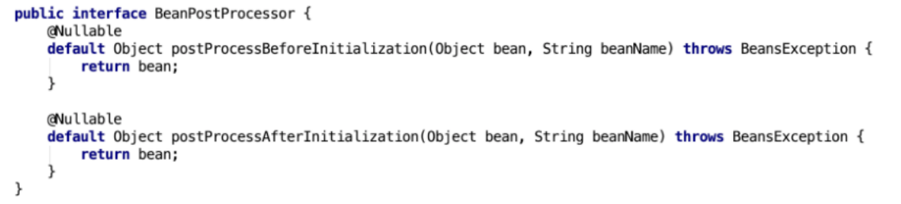
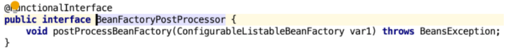
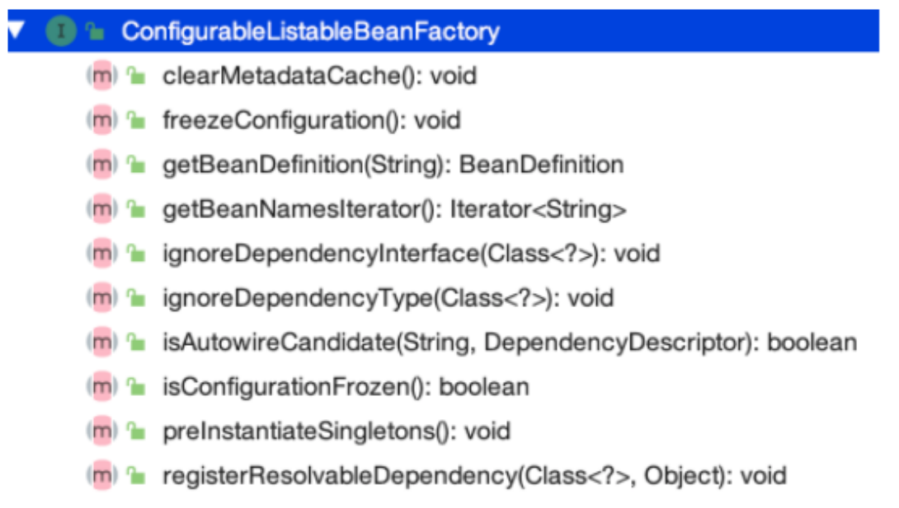
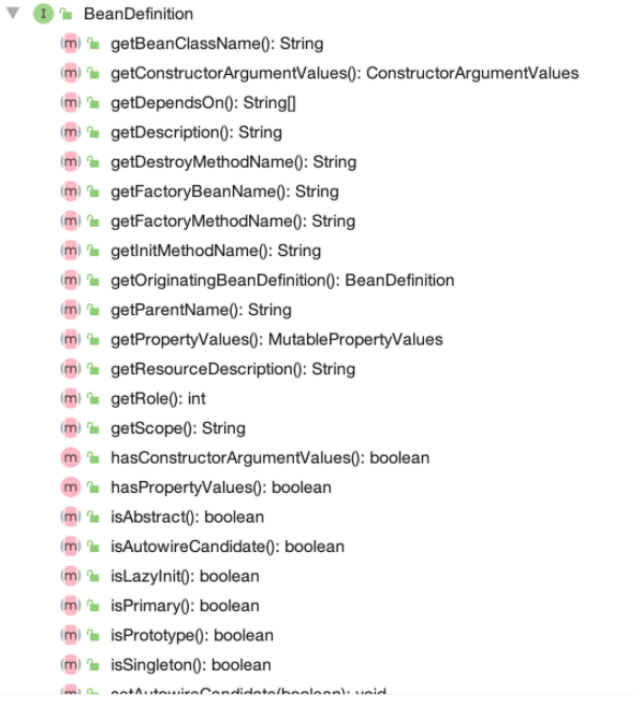

<!DOCTYPE html>


<html lang="zh-Hans">
  

    <head>
      <meta charset="utf-8" />
        
      <meta name="description" content="Technical output and problem solving record" />
      
      <meta
        name="viewport"
        content="width=device-width, initial-scale=1, maximum-scale=1"
      />
      <title>初识Spring中的IOC容器02 |  Tunan`s Blog</title>
  <meta name="generator" content="hexo-theme-ayer">
      
      <link rel="shortcut icon" href="/favicon.ico" />
       
<link rel="stylesheet" href="/dist/main.css">

      <link
        rel="stylesheet"
        href="https://cdn.jsdelivr.net/gh/Shen-Yu/cdn/css/remixicon.min.css"
      />
      
<link rel="stylesheet" href="/css/custom.css">
 
      <script src="https://cdn.jsdelivr.net/npm/pace-js@1.0.2/pace.min.js"></script>
       
 

      <link
        rel="stylesheet"
        href="https://cdn.jsdelivr.net/npm/@sweetalert2/theme-bulma@5.0.1/bulma.min.css"
      />
      <script src="https://cdn.jsdelivr.net/npm/sweetalert2@11.0.19/dist/sweetalert2.min.js"></script>

      <!-- mermaid -->
      
      <style>
        .swal2-styled.swal2-confirm {
          font-size: 1.6rem;
        }
      </style>
    </head>
  </html>
</html>


<body>
  <div id="app">
    
      
    <main class="content on">
      <section class="outer">
  <article
  id="post-Spring-IoC-的高级特性"
  class="article article-type-post"
  itemscope
  itemprop="blogPost"
  data-scroll-reveal
>
  <div class="article-inner">
    
    <header class="article-header">
       
<h1 class="article-title sea-center" style="border-left:0" itemprop="name">
  初识Spring中的IOC容器02
</h1>
 

      
    </header>
     
    <div class="article-meta">
      <a href="/2021/09/19/Spring-IoC-%E7%9A%84%E9%AB%98%E7%BA%A7%E7%89%B9%E6%80%A7/" class="article-date">
  <time datetime="2021-09-19T02:58:20.000Z" itemprop="datePublished">2021-09-19</time>
</a> 
  <div class="article-category">
    <a class="article-category-link" href="/categories/%E6%BA%90%E7%A0%81%E5%89%96%E6%9E%90/">源码剖析</a>
  </div>
  
<div class="word_count">
    <span class="post-time">
        <span class="post-meta-item-icon">
            <i class="ri-quill-pen-line"></i>
            <span class="post-meta-item-text"> Word count:</span>
            <span class="post-count">1.5k</span>
        </span>
    </span>

    <span class="post-time">
        &nbsp; | &nbsp;
        <span class="post-meta-item-icon">
            <i class="ri-book-open-line"></i>
            <span class="post-meta-item-text"> Reading time≈</span>
            <span class="post-count">6 min</span>
        </span>
    </span>
</div>
 
    </div>
      
    <div class="tocbot"></div>


  
    <div class="article-entry" itemprop="articleBody">
       
  <h1 id="Spring-IOC高级特性"><a href="#Spring-IOC高级特性" class="headerlink" title="Spring IOC高级特性"></a>Spring IOC高级特性</h1><h2 id="lazy-Init-延迟加载"><a href="#lazy-Init-延迟加载" class="headerlink" title="lazy-Init 延迟加载"></a>lazy-Init 延迟加载</h2><p>Bean 的延迟加载（延迟创建）</p>
<p>ApplicationContext 容器的默认⾏为是在启动服务器时将所有 singleton bean 提前进⾏实例化。提前实例化意味着作为初始化过程的⼀部分，ApplicationContext 实例会创建并配置所有的singleton bean。</p>
<p>比如：<span id="more"></span></p>
<pre><code class="xml">&lt;bean id=&quot;testBean&quot; class=&quot;cn.lagou.LazyBean&quot; /&gt;
该bean默认的设置为:
&lt;bean id=&quot;testBean&quot; calss=&quot;cn.lagou.LazyBean&quot; lazy-init=&quot;false&quot; /&gt;
</code></pre>
<p>lazy-init=”false”，⽴即加载，表示在spring启动时，⽴刻进⾏实例化。<br>如果不想让⼀个singleton bean 在 ApplicationContext实现初始化时被提前实例化，那么可以将bean设置为延迟实例化。</p>
<pre><code class="xml">&lt;bean id=&quot;testBean&quot; calss=&quot;cn.lagou.LazyBean&quot; lazy-init=&quot;true&quot; /&gt;
</code></pre>
<p>设置 lazy-init 为 true 的 bean 将不会在 ApplicationContext 启动时提前被实例化，⽽是第⼀次向容器通过 getBean 索取 bean 时实例化的。</p>
<p>如果⼀个设置了⽴即加载的 bean1，引⽤了⼀个延迟加载的 bean2 ，那么 bean1 在容器启动时被实例化，⽽ bean2 由于被 bean1 引⽤，所以也被实例化，这种情况也符合延时加载的 bean 在第⼀次调⽤时才被实例化的规则。</p>
<p>也可以在容器层次中通过在 元素上使⽤ “default-lazy-init” 属性来控制延时初始化。如下⾯配置：</p>
<pre><code class="xml">&lt;beans default-lazy-init=&quot;true&quot;&gt;
    &lt;!-- no beans will be eagerly pre-instantiated... --&gt;
&lt;/beans&gt;
</code></pre>
<p>如果⼀个 bean 的 scope 属性为 scope=”pototype” 时，即使设置了 lazy-init=”false”，容器启动时也不会实例化bean，⽽是调⽤ getBean ⽅法实例化的。</p>
<p><strong>应⽤场景</strong><br>（1）开启延迟加载⼀定程度提⾼容器启动和运转性能<br>（2）对于不常使⽤的 Bean 设置延迟加载，这样偶尔使⽤的时候再加载，不必要从⼀开始该 Bean 就占<br>⽤资源</p>
<h2 id="FactoryBean-和-BeanFactory"><a href="#FactoryBean-和-BeanFactory" class="headerlink" title="FactoryBean 和 BeanFactory"></a>FactoryBean 和 BeanFactory</h2><p>BeanFactory接⼝是容器的顶级接⼝，定义了容器的⼀些基础⾏为，负责⽣产和管理Bean的⼀个⼯⼚，具体使⽤它下⾯的⼦接⼝类型，⽐如ApplicationContext；此处我们重点分析FactoryBean</p>
<p>Spring中Bean有两种，⼀种是普通Bean，⼀种是⼯⼚Bean（FactoryBean），FactoryBean可以⽣成某⼀个类型的Bean实例（返回给我们），也就是说我们可以借助于它⾃定义Bean的创建过程。</p>
<p>Bean创建的三种⽅式中的静态⽅法和实例化⽅法和FactoryBean作⽤类似，FactoryBean使⽤较多，尤其在Spring框架⼀些组件中会使⽤，还有其他框架和Spring框架整合时使⽤。</p>
<pre><code class="java">// 可以让我们⾃定义Bean的创建过程（完成复杂Bean的定义）
public interface FactoryBean&lt;T&gt; &#123;
    
  @Nullable
  // 返回FactoryBean创建的Bean实例，如果isSingleton返回true，则该实例会放到Spring容器的单例对象缓存池中Map
  T getObject() throws Exception;
    
  @Nullable
  // 返回FactoryBean创建的Bean类型
  Class&lt;?&gt; getObjectType();
    
  // 返回作⽤域是否单例
  default boolean isSingleton() &#123;
    return true;
  &#125;
&#125;
</code></pre>
<p>Company类</p>
<pre><code class="java">public class Company &#123;
    private String name;
    private String address;
    private int scale;
    public String getName() &#123;
        return name;
    &#125;
    public void setName(String name) &#123;
        this.name = name;
    &#125;
    public String getAddress() &#123;
        return address;
    &#125;
    public void setAddress(String address) &#123;
        this.address = address;
    &#125;
    public int getScale() &#123;
        return scale;
    &#125;
    public void setScale(int scale) &#123;
        this.scale = scale;
    &#125;
    @Override
    public String toString() &#123;
        return &quot;Company&#123;&quot; +
                &quot;name=&#39;&quot; + name + &#39;\&#39;&#39; +
                &quot;, address=&#39;&quot; + address + &#39;\&#39;&#39; +
                &quot;, scale=&quot; + scale +
                &#39;&#125;&#39;;
    &#125;
&#125;
</code></pre>
<p>CompanyFactoryBean类</p>
<pre><code class="java">public class CompanyFactoryBean implements FactoryBean&lt;Company&gt; &#123;
    
    private String companyInfo; // 公司名称,地址,规模
    public void setCompanyInfo(String companyInfo) &#123;
        this.companyInfo = companyInfo;
    &#125;
    
    @Override
    public Company getObject() throws Exception &#123;
        // 模拟创建复杂对象Company
        Company company = new Company();
        String[] strings = companyInfo.split(&quot;,&quot;);
        company.setName(strings[0]);
        company.setAddress(strings[1]);
        company.setScale(Integer.parseInt(strings[2]));
        return company;
    &#125;
    @Override
    public Class&lt;?&gt; getObjectType() &#123;
        return Company.class;
    &#125;
    @Override
    public boolean isSingleton() &#123;
        return true;
    &#125;
&#125;
</code></pre>
<p>Xml配置</p>
<pre><code class="xml">&lt;bean id=&quot;companyBean&quot; class=&quot;com.lagou.edu.factory.CompanyFactoryBean&quot;&gt;
     &lt;property name=&quot;companyInfo&quot; value=&quot;拉勾,中关村,500&quot;/&gt;
&lt;/bean&gt;
</code></pre>
<p>测试，获取FactoryBean产⽣的对象</p>
<pre><code class="java">Object companyBean = applicationContext.getBean(&quot;companyBean&quot;);
System.out.println(&quot;bean:&quot; + companyBean);

// 结果如下
bean:Company&#123;name=&#39;拉勾&#39;, address=&#39;中关村&#39;, scale=500&#125;
</code></pre>
<p>测试，获取FactoryBean，需要在id之前添加“&amp;”</p>
<pre><code class="java">Object companyBean = applicationContext.getBean(&quot;&amp;companyBean&quot;);
System.out.println(&quot;bean:&quot; + companyBean);

// 结果如下
bean:com.lagou.edu.factory.CompanyFactoryBean@53f6fd09
</code></pre>
<h2 id="后置处理器"><a href="#后置处理器" class="headerlink" title="后置处理器"></a>后置处理器</h2><p>Spring提供了两种后处理bean的扩展接⼝，分别为 BeanPostProcessor 和BeanFactoryPostProcessor，两者在使⽤上是有所区别的。</p>
<p>⼯⼚初始化（BeanFactory）—&gt; Bean对象</p>
<p>在BeanFactory初始化之后可以使⽤BeanFactoryPostProcessor进⾏后置处理做⼀些事情<br>在Bean对象实例化（并不是Bean的整个⽣命周期完成）之后可以使⽤BeanPostProcessor进⾏后置处理做⼀些事情</p>
<p>注意：对象不⼀定是springbean，⽽springbean⼀定是个对象</p>
<p>SpringBean的⽣命周期</p>
<h3 id="BeanPostProcessor"><a href="#BeanPostProcessor" class="headerlink" title="BeanPostProcessor"></a>BeanPostProcessor</h3><p>BeanPostProcessor是针对Bean级别的处理，可以针对某个具体的Bean.</p>
<p></p>
<p>该接⼝提供了两个⽅法，分别在Bean的初始化⽅法前和初始化⽅法后执⾏，具体这个初始化⽅法指的是什么⽅法，类似我们在定义bean时，定义了init-method所指定的⽅法</p>
<p>定义⼀个类实现了BeanPostProcessor，默认是会对整个Spring容器中所有的bean进⾏处理。如果要对具体的某个bean处理，可以通过⽅法参数判断，两个类型参数分别为Object和String，第⼀个参数是每个bean的实例，第⼆个参数是每个bean的name或者id属性的值。所以我们可以通过第⼆个参数，来判断我们将要处理的具体的bean。</p>
<p>注意：处理是发⽣在Spring容器的实例化和依赖注⼊之后。</p>
<h3 id="BeanFactoryPostProcessor"><a href="#BeanFactoryPostProcessor" class="headerlink" title="BeanFactoryPostProcessor"></a>BeanFactoryPostProcessor</h3><p>BeanFactory级别的处理，是针对整个Bean的⼯⼚进⾏处理，典型应⽤:PropertyPlaceholderConfigurer</p>
<p></p>
<p>此接⼝只提供了⼀个⽅法，⽅法参数为ConfigurableListableBeanFactory，该参数类型定义了⼀些⽅法</p>
<p></p>
<p>其中有个⽅法名为getBeanDefinition的⽅法，我们可以根据此⽅法，找到我们定义bean 的BeanDefinition对象。然后我们可以对定义的属性进⾏修改，以下是BeanDefinition中的⽅法</p>
<p></p>
<p>⽅法名字类似我们bean标签的属性，setBeanClassName对应bean标签中的class属性，所以当我们拿到BeanDefinition对象时，我们可以⼿动修改bean标签中所定义的属性值。</p>
<p><strong>BeanDefinition对象</strong>：我们在 XML 中定义的 bean标签，Spring 解析 bean 标签成为⼀个 JavaBean，这个JavaBean 就是BeanDefinition</p>
<p>注意：调⽤ BeanFactoryPostProcessor ⽅法时，这时候bean还没有实例化，此时 bean 刚被解析成BeanDefinition对象</p>
 
      <!-- reward -->
      
    </div>
    

    <!-- copyright -->
    
    <div class="declare">
      <ul class="post-copyright">
        <li>
          <i class="ri-copyright-line"></i>
          <strong>Copyright： </strong>
          
          Copyright is owned by the author. For commercial reprints, please contact the author for authorization. For non-commercial reprints, please indicate the source.
          
        </li>
      </ul>
    </div>
    
    <footer class="article-footer">
       
<div class="share-btn">
      <span class="share-sns share-outer">
        <i class="ri-share-forward-line"></i>
        分享
      </span>
      <div class="share-wrap">
        <i class="arrow"></i>
        <div class="share-icons">
          
          <a class="weibo share-sns" href="javascript:;" data-type="weibo">
            <i class="ri-weibo-fill"></i>
          </a>
          <a class="weixin share-sns wxFab" href="javascript:;" data-type="weixin">
            <i class="ri-wechat-fill"></i>
          </a>
          <a class="qq share-sns" href="javascript:;" data-type="qq">
            <i class="ri-qq-fill"></i>
          </a>
          <a class="douban share-sns" href="javascript:;" data-type="douban">
            <i class="ri-douban-line"></i>
          </a>
          <!-- <a class="qzone share-sns" href="javascript:;" data-type="qzone">
            <i class="icon icon-qzone"></i>
          </a> -->
          
          <a class="facebook share-sns" href="javascript:;" data-type="facebook">
            <i class="ri-facebook-circle-fill"></i>
          </a>
          <a class="twitter share-sns" href="javascript:;" data-type="twitter">
            <i class="ri-twitter-fill"></i>
          </a>
          <a class="google share-sns" href="javascript:;" data-type="google">
            <i class="ri-google-fill"></i>
          </a>
        </div>
      </div>
</div>

<div class="wx-share-modal">
    <a class="modal-close" href="javascript:;"><i class="ri-close-circle-line"></i></a>
    <p>扫一扫，分享到微信</p>
    <div class="wx-qrcode">
      
    </div>
</div>

<div id="share-mask"></div>  
  <ul class="article-tag-list" itemprop="keywords"><li class="article-tag-list-item"><a class="article-tag-list-link" href="/tags/Spring/" rel="tag">Spring</a></li></ul>

    </footer>
  </div>

   
  <nav class="article-nav">
    
      <a href="/2021/10/02/Spring%E6%BA%90%E7%A0%81%E4%B9%8BIOC%E5%AE%B9%E5%99%A8%E5%88%9D%E5%A7%8B%E5%8C%96%E4%B8%BB%E4%BD%93%E6%B5%81%E7%A8%8B/" class="article-nav-link">
        <strong class="article-nav-caption">上一篇</strong>
        <div class="article-nav-title">
          
            初识Spring中的IOC容器03
          
        </div>
      </a>
    
    
      <a href="/2021/09/18/%E8%AF%A6%E8%A7%A3Spring%E4%B8%AD%E7%9A%84AOP%E6%9C%BA%E5%88%B6/" class="article-nav-link">
        <strong class="article-nav-caption">下一篇</strong>
        <div class="article-nav-title">初识Spring中的AOP机制01</div>
      </a>
    
  </nav>

   
<!-- valine评论 -->
<div id="vcomments-box">
  <div id="vcomments"></div>
</div>
<script src="//cdn1.lncld.net/static/js/3.0.4/av-min.js"></script>
<script src="https://cdn.jsdelivr.net/npm/valine@1.4.14/dist/Valine.min.js"></script>
<script>
  new Valine({
    el: "#vcomments",
    app_id: "",
    app_key: "",
    path: window.location.pathname,
    avatar: "monsterid",
    placeholder: "给我的文章加点评论吧~",
    recordIP: true,
  });
  const infoEle = document.querySelector("#vcomments .info");
  if (infoEle && infoEle.childNodes && infoEle.childNodes.length > 0) {
    infoEle.childNodes.forEach(function (item) {
      item.parentNode.removeChild(item);
    });
  }
</script>
<style>
  #vcomments-box {
    padding: 5px 30px;
  }

  @media screen and (max-width: 800px) {
    #vcomments-box {
      padding: 5px 0px;
    }
  }

  #vcomments-box #vcomments {
    background-color: #fff;
  }

  .v .vlist .vcard .vh {
    padding-right: 20px;
  }

  .v .vlist .vcard {
    padding-left: 10px;
  }
</style>

 
   
     
</article>

</section>
      <footer class="footer">
  <div class="outer">
    <ul>
      <li>
        Copyrights &copy;
        2018-2022
        <i class="ri-heart-fill heart_icon"></i> Tunan
      </li>
    </ul>
    <ul>
      <li>
        
      </li>
    </ul>
    <ul>
      <li>
        
        
        <span>
  <span><i class="ri-user-3-fill"></i>Visitors:<span id="busuanzi_value_site_uv"></span></span>
  <span class="division">|</span>
  <span><i class="ri-eye-fill"></i>Views:<span id="busuanzi_value_page_pv"></span></span>
</span>
        
      </li>
    </ul>
    <ul>
      
    </ul>
    <ul>
      
    </ul>
    <ul>
      <li>
        <!-- cnzz统计 -->
        
        <script type="text/javascript" src='https://s9.cnzz.com/z_stat.php?id=1278069914&amp;web_id=1278069914'></script>
        
      </li>
    </ul>
  </div>
</footer>    
    </main>
    <div class="float_btns">
      <div class="totop" id="totop">
  <i class="ri-arrow-up-line"></i>
</div>

<div class="todark" id="todark">
  <i class="ri-moon-line"></i>
</div>

    </div>
    <aside class="sidebar on">
      <button class="navbar-toggle"></button>
<nav class="navbar">
  
  <div class="logo">
    <a href="/"></a>
  </div>
  
  <ul class="nav nav-main">
    
    <li class="nav-item">
      <a class="nav-item-link" href="/">主页</a>
    </li>
    
    <li class="nav-item">
      <a class="nav-item-link" href="/archives">归档</a>
    </li>
    
    <li class="nav-item">
      <a class="nav-item-link" href="/categories">分类</a>
    </li>
    
    <li class="nav-item">
      <a class="nav-item-link" href="/tags">标签</a>
    </li>
    
    <li class="nav-item">
      <a class="nav-item-link" href="/tags/share">分享</a>
    </li>
    
    <li class="nav-item">
      <a class="nav-item-link" target="_blank" rel="noopener" href="https://blog.csdn.net/North_City_">CSDN</a>
    </li>
    
  </ul>
</nav>
<nav class="navbar navbar-bottom">
  <ul class="nav">
    <li class="nav-item">
      
      <a class="nav-item-link nav-item-search"  title="Search">
        <i class="ri-search-line"></i>
      </a>
      
      
      <a class="nav-item-link" target="_blank" href="/atom.xml" title="RSS Feed">
        <i class="ri-rss-line"></i>
      </a>
      
    </li>
  </ul>
</nav>
<div class="search-form-wrap">
  <div class="local-search local-search-plugin">
  <input type="search" id="local-search-input" class="local-search-input" placeholder="Search...">
  <div id="local-search-result" class="local-search-result"></div>
</div>
</div>
    </aside>
    <div id="mask"></div>

<!-- #reward -->
<div id="reward">
  <span class="close"><i class="ri-close-line"></i></span>
  <p class="reward-p"><i class="ri-cup-line"></i>请我喝杯咖啡吧~</p>
  <div class="reward-box">
    
    <div class="reward-item">
      
      <span class="reward-type">支付宝</span>
    </div>
    
    
    <div class="reward-item">
      
      <span class="reward-type">微信</span>
    </div>
    
  </div>
</div>
    
<script src="/js/jquery-3.6.0.min.js"></script>
 
<script src="/js/lazyload.min.js"></script>

<!-- Tocbot -->
 
<script src="/js/tocbot.min.js"></script>

<script>
  tocbot.init({
    tocSelector: ".tocbot",
    contentSelector: ".article-entry",
    headingSelector: "h1, h2, h3, h4, h5, h6",
    hasInnerContainers: true,
    scrollSmooth: true,
    scrollContainer: "main",
    positionFixedSelector: ".tocbot",
    positionFixedClass: "is-position-fixed",
    fixedSidebarOffset: "auto",
  });
</script>

<script src="https://cdn.jsdelivr.net/npm/jquery-modal@0.9.2/jquery.modal.min.js"></script>
<link
  rel="stylesheet"
  href="https://cdn.jsdelivr.net/npm/jquery-modal@0.9.2/jquery.modal.min.css"
/>
<script src="https://cdn.jsdelivr.net/npm/justifiedGallery@3.7.0/dist/js/jquery.justifiedGallery.min.js"></script>

<script src="/dist/main.js"></script>

<!-- ImageViewer -->
 <!-- Root element of PhotoSwipe. Must have class pswp. -->
<div class="pswp" tabindex="-1" role="dialog" aria-hidden="true">

    <!-- Background of PhotoSwipe. 
         It's a separate element as animating opacity is faster than rgba(). -->
    <div class="pswp__bg"></div>

    <!-- Slides wrapper with overflow:hidden. -->
    <div class="pswp__scroll-wrap">

        <!-- Container that holds slides. 
            PhotoSwipe keeps only 3 of them in the DOM to save memory.
            Don't modify these 3 pswp__item elements, data is added later on. -->
        <div class="pswp__container">
            <div class="pswp__item"></div>
            <div class="pswp__item"></div>
            <div class="pswp__item"></div>
        </div>

        <!-- Default (PhotoSwipeUI_Default) interface on top of sliding area. Can be changed. -->
        <div class="pswp__ui pswp__ui--hidden">

            <div class="pswp__top-bar">

                <!--  Controls are self-explanatory. Order can be changed. -->

                <div class="pswp__counter"></div>

                <button class="pswp__button pswp__button--close" title="Close (Esc)"></button>

                <button class="pswp__button pswp__button--share" style="display:none" title="Share"></button>

                <button class="pswp__button pswp__button--fs" title="Toggle fullscreen"></button>

                <button class="pswp__button pswp__button--zoom" title="Zoom in/out"></button>

                <!-- Preloader demo http://codepen.io/dimsemenov/pen/yyBWoR -->
                <!-- element will get class pswp__preloader--active when preloader is running -->
                <div class="pswp__preloader">
                    <div class="pswp__preloader__icn">
                        <div class="pswp__preloader__cut">
                            <div class="pswp__preloader__donut"></div>
                        </div>
                    </div>
                </div>
            </div>

            <div class="pswp__share-modal pswp__share-modal--hidden pswp__single-tap">
                <div class="pswp__share-tooltip"></div>
            </div>

            <button class="pswp__button pswp__button--arrow--left" title="Previous (arrow left)">
            </button>

            <button class="pswp__button pswp__button--arrow--right" title="Next (arrow right)">
            </button>

            <div class="pswp__caption">
                <div class="pswp__caption__center"></div>
            </div>

        </div>

    </div>

</div>

<link rel="stylesheet" href="https://cdn.jsdelivr.net/npm/photoswipe@4.1.3/dist/photoswipe.min.css">
<link rel="stylesheet" href="https://cdn.jsdelivr.net/npm/photoswipe@4.1.3/dist/default-skin/default-skin.min.css">
<script src="https://cdn.jsdelivr.net/npm/photoswipe@4.1.3/dist/photoswipe.min.js"></script>
<script src="https://cdn.jsdelivr.net/npm/photoswipe@4.1.3/dist/photoswipe-ui-default.min.js"></script>

<script>
    function viewer_init() {
        let pswpElement = document.querySelectorAll('.pswp')[0];
        let $imgArr = document.querySelectorAll(('.article-entry img:not(.reward-img)'))

        $imgArr.forEach(($em, i) => {
            $em.onclick = () => {
                // slider展开状态
                // todo: 这样不好，后面改成状态
                if (document.querySelector('.left-col.show')) return
                let items = []
                $imgArr.forEach(($em2, i2) => {
                    let img = $em2.getAttribute('data-idx', i2)
                    let src = $em2.getAttribute('data-target') || $em2.getAttribute('src')
                    let title = $em2.getAttribute('alt')
                    // 获得原图尺寸
                    const image = new Image()
                    image.src = src
                    items.push({
                        src: src,
                        w: image.width || $em2.width,
                        h: image.height || $em2.height,
                        title: title
                    })
                })
                var gallery = new PhotoSwipe(pswpElement, PhotoSwipeUI_Default, items, {
                    index: parseInt(i)
                });
                gallery.init()
            }
        })
    }
    viewer_init()
</script> 
<!-- MathJax -->

<!-- Katex -->

<!-- busuanzi  -->
 
<script src="/js/busuanzi-2.3.pure.min.js"></script>
 
<!-- ClickLove -->

<!-- ClickBoom1 -->

<!-- ClickBoom2 -->

<!-- CodeCopy -->
 
<link rel="stylesheet" href="/css/clipboard.css">
 <script src="https://cdn.jsdelivr.net/npm/clipboard@2/dist/clipboard.min.js"></script>
<script>
  function wait(callback, seconds) {
    var timelag = null;
    timelag = window.setTimeout(callback, seconds);
  }
  !function (e, t, a) {
    var initCopyCode = function(){
      var copyHtml = '';
      copyHtml += '<button class="btn-copy" data-clipboard-snippet="">';
      copyHtml += '<i class="ri-file-copy-2-line"></i><span>COPY</span>';
      copyHtml += '</button>';
      $(".highlight .code pre").before(copyHtml);
      $(".article pre code").before(copyHtml);
      var clipboard = new ClipboardJS('.btn-copy', {
        target: function(trigger) {
          return trigger.nextElementSibling;
        }
      });
      clipboard.on('success', function(e) {
        let $btn = $(e.trigger);
        $btn.addClass('copied');
        let $icon = $($btn.find('i'));
        $icon.removeClass('ri-file-copy-2-line');
        $icon.addClass('ri-checkbox-circle-line');
        let $span = $($btn.find('span'));
        $span[0].innerText = 'COPIED';
        
        wait(function () { // 等待两秒钟后恢复
          $icon.removeClass('ri-checkbox-circle-line');
          $icon.addClass('ri-file-copy-2-line');
          $span[0].innerText = 'COPY';
        }, 2000);
      });
      clipboard.on('error', function(e) {
        e.clearSelection();
        let $btn = $(e.trigger);
        $btn.addClass('copy-failed');
        let $icon = $($btn.find('i'));
        $icon.removeClass('ri-file-copy-2-line');
        $icon.addClass('ri-time-line');
        let $span = $($btn.find('span'));
        $span[0].innerText = 'COPY FAILED';
        
        wait(function () { // 等待两秒钟后恢复
          $icon.removeClass('ri-time-line');
          $icon.addClass('ri-file-copy-2-line');
          $span[0].innerText = 'COPY';
        }, 2000);
      });
    }
    initCopyCode();
  }(window, document);
</script>
 
<!-- CanvasBackground -->

<script>
  if (window.mermaid) {
    mermaid.initialize({ theme: "forest" });
  }
</script>


    
    

  </div>
</body>

</html>